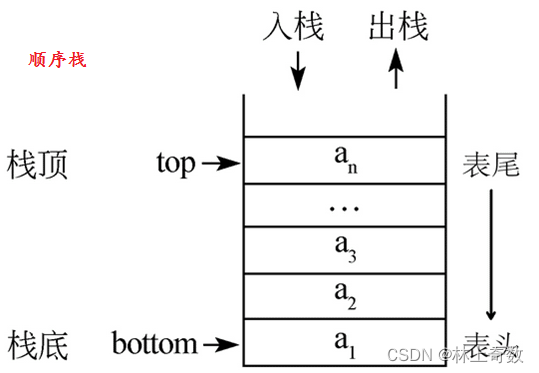
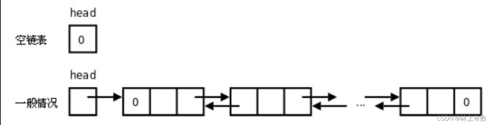
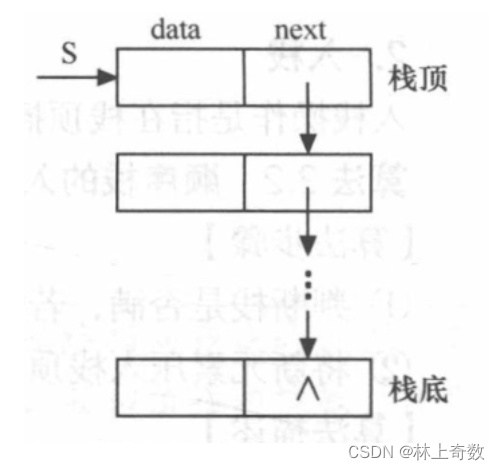
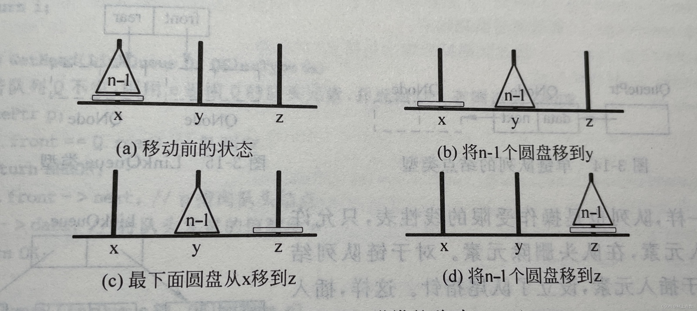

数据结构——栈（详解）
一.栈的定义
栈（Stack）是一种常见的数据结构，它是一种“后进先出”（Last In First Out，LIFO）的数据结构。栈可以看做是一种特殊的线性表，只能在栈顶进行插入和删除操作。栈顶是允许操作的，而栈底是固定的。
二.栈的基本操作
栈的基本操作包括：入栈（Push）、出栈（Pop）、取栈顶元素（Top）和判空（IsEmpty）等。
1.顺序栈
1.1顺序栈的基本概念
顺序栈是一种使用数组实现的栈，也称为数组栈。其基本思路是通过数组来存储栈中的元素，并通过栈顶指针指示栈顶元素在数组中的位置。顺序栈具有以下特点：
- 存储结构：使用数组作为底层存储结构，数组的每个元素存储栈中的一个元素；
- 操作受限：栈只能从栈顶插入和删除元素，不支持在栈中间插入和删除元素；
- 先进后出：栈的元素遵循“先进后出”（Last In First Out, LIFO）的原则，即后插入的元素先被删除；
- 顺序访问：只能从栈顶开始访问栈中的元素，不能从栈底或中间位置访问元素。
顺序栈的实现非常简单，可以使用数组和栈顶指针两个变量来实现。顺序栈的主要操作包括初始化、入栈、出栈、获取栈顶元素、判断栈是否为空以及获取栈中元素的数量等。由于顺序栈的存储结构是数组，因此在使用过程中需要考虑数组大小的限制，当栈中元素数量超过数组大小时，需要对数组进行扩容。
注意：除了遍历栈中的元素的操作时间复杂度为O(n)外，其余：入栈、出栈、取栈顶元素、判断栈是否为空操作的时间复杂度均为O(1)。

1.2顺序栈的基本操作
相关的头文件
#include<math.h>
#include <iostream>
typedef int SElemType;
#define STACK_INIT_SIZE 10 //存储空间初始分配量
#define STACK_INCREMENT 2 //存储空间分配增量
定义顺序栈结构体
struct SqStack{ //定义顺序栈结构体
SElemType *base; //栈底指针
SElemType *top; //栈顶指针
int stacksize; //栈可用的最大容量
};
初始化栈
void InitStack(SqStack &S){ //初始化栈S
S.base = (SElemType*)malloc(STACK_INIT_SIZE*sizeof(SElemType)); //给栈分配空间
if(!S.base) //如果分配失败
exit(OVERFLOW); //则退出程序
S.top = S.base; //栈顶指针和栈底指针指向同一个位置
S.stacksize = STACK_INIT_SIZE; //初始化栈的最大容量
}
销毁栈
void DestoryStack(SqStack &S){ //销毁栈S
free(S.base); //释放栈S占用的空间
S.top = S.base = NULL; //将栈底指针和栈顶指针都置为空
S.stacksize = 0; //将栈的最大容量清零
}
清空栈
void ClearStack(SqStack &S){ //清空栈S
S.top = S.base; //将栈顶指针指向栈底指针，实现清空栈的效果
}
判断栈是否为空
int StackEmpty(SqStack S){ //判断栈S是否为空
if(S.top == S.base) //如果栈顶指针和栈底指针指向同一个位置，说明栈为空
return true;
else
return false;
}
返回栈长度
int StackLength(SqStack S){ //求栈S的长度
return S.top - S.base; //栈顶指针减去栈底指针的差即为栈的长度
}
获取栈顶元素值
int GetTop(SqStack S,SElemType &e){ //获取栈顶元素，并将其存储到e中
if (S.top > S.base){ //如果栈不为空
e = *(S.top-1); //将栈顶元素存储到e中
return true;
}
else
return false;
}
入栈
void Push(SqStack &S,SElemType e){ //在栈顶插入元素e
if(S.top - S.base == S.stacksize){ //如果栈满
S.base = (SElemType*)realloc(S.base, (S.stacksize+STACK_INCREMENT)*sizeof(SElemType)); //给栈扩容
if(!S.base) //如果扩容失败
exit(OVERFLOW); //则退出程序
S.top = S.base + S.stacksize; //将栈顶指针指向扩容后的栈顶
S.stacksize += STACK_INCREMENT; //更新栈的最大容量
}
*(S.top)++ = e; //将元素e插入栈顶，并将栈顶指针上移一位
}
出栈
// 如果栈为空，返回false；否则返回true
int Pop(SqStack &S,SElemType &e){
if(S.top == S.base) //栈空
return false;
e = *(--S.top); //将栈顶元素赋给e，栈顶指针下移一个存储单元
return true;
}
遍历打印栈内元素
// 定义一个函数visit，用于打印元素
void visit(SElemType e)
{
std::cout << e << " ";
}
// 定义一个函数用于遍历栈中的元素并对每个元素执行visit函数
void StackTraverse(SqStack S,void(*visit)(SElemType)){
SElemType *p = S.base;
while(S.top > p) //p指向栈元素
visit(*p++); //对该栈调用visit()，p指针上移一个存储单元
printf("\n");
}
主函数
int main() {
int j;
SqStack s;
SElemType e;
InitStack(s);
for(j = 1; j <= 12; j++)
Push(s, j);
printf("栈中元素依次为\n");
StackTraverse(s, visit);
Pop(s,e);
printf("弹出的栈顶元素e = %d\n",e);
printf("栈空否? %d (1:空 0:否)\n",StackEmpty(s));
GetTop(s, e);
printf("栈顶元素e = %d,栈的长度为%d\n",e,StackLength(s));
ClearStack(s);
printf("清空栈后，栈空否? %d (1:空 0:否)\n",StackEmpty(s));
DestoryStack(s);
printf("销毁栈后，s.top = %u,s.base = %u,s.stacksize = %d\n",s.top,s.base,s.stacksize);
}
2.栈链
2.1栈链的基本概念
链栈是一种基于链表实现的栈，其特点是无需事先分配固定长度的存储空间，栈的长度可以动态增长或缩小，避免了顺序栈可能存在的空间浪费和存储溢出问题。
链栈中的每个元素称为“节点”，每个节点包括两个部分：数据域和指针域。数据域用来存储栈中的元素值，指针域用来指向栈顶元素所在的节点。
链栈的基本操作包括入栈、出栈、获取栈顶元素和遍历等，相比顺序栈而言，链栈的实现难度稍高，但其在某些情况下有着更好的灵活性和效率，特别适用于在动态存储空间较为紧缺的场合。
链栈的进栈push和出栈pop操作都很简单，时间复杂度均为O(1)
注意：如果栈的使用过程中元素变化不可预料,那么最好使用链栈,反之,如果它的变化在可控范围内,建议使用顺序栈。
2.1链栈的种类
链栈按照链表的实现方式可分为单链栈和双链栈。实际应用通常采用单链栈。
单链栈使用单链表实现，每个节点只含有一个指向下一个节点的指针。因此，单链栈只能从栈顶进行插入和删除操作。

双链栈使用双向链表实现，每个节点同时包含指向前一个节点和后一个节点的指针。因此，双链栈既可以从栈顶进行插入和删除操作，也可以从栈底进行插入和删除操作，使得操作更加灵活。

2.3链栈的基本操作
单链栈的类型定义
// 定义链栈的结构体
typedef struct StackNode{
SElemType data;
StackNode *next;
}StackNode,*LinkStack;
单链栈初始化
// 初始化链栈
int InitStack(LinkStack &S){
S = NULL;
return true;
}
判断单链栈是否为空
// 判断链栈是否为空
bool StackEmpty(LinkStack S){
return S == NULL;
}
单链栈入栈

// 入栈
bool Push(LinkStack &S, SElemType e){
StackNode *p = (StackNode*)malloc(sizeof(StackNode));
if(!p){
return false; // 分配内存失败
}
p->data = e;
p->next = S;
S = p;
return true;
}
单链栈出栈

// 出栈
bool Pop(LinkStack &S, SElemType &e){
if(StackEmpty(S)){
return false; // 栈为空
}
StackNode *p = S;
e = p->data;
S = S->next;
free(p);
return true;
}
获取单链栈栈顶元素
// 获取栈顶元素
bool GetTop(LinkStack S, SElemType &e){
if(StackEmpty(S)){
return false; // 栈为空
}
e = S->data;
return true;
}
清空单链栈
// 清空栈
void ClearStack(LinkStack &S){
StackNode *p;
while(S){
p = S;
S = S->next;
free(p);
}
}
销毁单链栈
// 销毁栈
void DestroyStack(LinkStack &S){
ClearStack(S);
S = NULL;
}
遍历单链栈
// 遍历栈并打印
void StackTraverse(LinkStack S){
StackNode *p = S;
while(p){
printf("%d ", p->data);
p = p->next;
}
printf("\n");
}
测试代码
#include <iostream>
int main() {
LinkStack S;
InitStack(S);
int e;
Push(S, 1);
Push(S, 2);
Push(S, 3);
printf("现在栈内元素为(后进先出)：");
StackTraverse(S);
printf("栈顶元素为：%d\n", GetTop(S,e));
Pop(S,e);
printf("现在栈内元素为(后进先出)：");
StackTraverse(S);
printf("弹出一个元素后，栈顶元素为：%d\n", GetTop(S,e));
ClearStack(S);
if (StackEmpty(S)) {
printf("栈为空\n");
} else {
printf("栈不为空\n");
}
DestroyStack(S);
return 0;
}
三.栈的应用
1.函数递归调用
函数递归调用时，计算机会把函数调用时需要的参数和返回地址等信息放入栈中，函数执行完毕后再从栈中取回这些信息。
//以汉诺塔问题为例展示栈的递归调用
#include <iostream>
int c = 0;
void move(char x,int n,char z){
printf("第%i步:将%i号盘从%c移到%c\n", ++c, n, x, z);
}
void hanoi(int n, char x, char y, char z){
if(n==1){
move(x, 1, z);
}
else{
hanoi(n-1, x, z, y);
move(x, n, z);
hanoi(n-1, y, x, z);
}
}
int main() {
int n;
printf("三个塔座为a,b,c,圆盘最初在a座，借助b座移到c座，请输入圆盘数量：");
scanf("%d",&n);
hanoi(n, 'a', 'b', 'c');
}


2.表达式求解
在编译器中，中缀表达式转为后缀表达式后，可以使用栈来实现后缀表达式的求值。
char Precede(SElemType t1, SElemType t2)
{
char f;
switch(t2)
{ case '+':
case '-': if(t1=='(' || t1=='\n')
f='<';
else
f='>';
break;
case '*':
case '/': if(t1=='*' || t1=='/' || t1==')')
f='>';
else
f='<';
break;
case '(': if(t1==')')
{ printf("括号不匹配\n");
exit(OVERFLOW);
}
else
f='<';
break;
case ')': switch(t1)
{ case '(': f='=';
break;
case'\n': printf("缺乏左括号\n");
exit(OVERFLOW);
default : f='>';
}
break;
case'\n': switch(t1)
{ case'\n': f='=';
break;
case '(': printf("缺乏右括号\n");
exit(OVERFLOW);
default : f='>';
}
}
return f;
}
Status In(SElemType c)
{
switch(c)
{ case '+':
case '-':
case '*':
case '/':
case '(':
case ')':
case'\n': return TRUE;
default : return FALSE;
}
}
SElemType Operate(SElemType a, SElemType theta, SElemType b)
{
switch(theta)
{ case '+': return a+b;
case '-': return a-b;
case '*': return a*b;
}
return a/b;
}
// 表达式求值（范围为int类型，输入负数要用（0-正数）表示）
typedef int SElemType;
SElemType EvaluateExpression()
{
SqStack OPTR, OPND;
SElemType a, b, d, x;
char c;
c=getchar();
InitStack(OPTR);
InitStack(OPND);
Push(OPTR, '\n');
GetTop(OPTR, x);
while(c!='\n' || x!='\n')
{ if(In(c))
switch(Precede(x, c))
{ case'<': Push(OPTR, c);
c=getchar();
break;
case'=': Pop(OPTR, x);
c=getchar();
break;
case'>': Pop(OPTR, x);
Pop(OPND, b);
Pop(OPND, a);
Push(OPND, Operate(a, x, b));
}
else if(c>='0' && c<='9')
{ d=0;
while(c>='0' && c<='9')
{ d=d*10+c-'0';
c=getchar();
}
Push(OPND, d);
}
else
{ printf("出现非法字符\n");
DestroyStack(OPTR);
DestroyStack(OPND);
exit(OVERFLOW);
}
GetTop(OPTR, x);
}
Pop(OPND, x);
if(!StackEmpty(OPND))
{ printf("表达式不正确\n");
DestroyStack(OPTR);
DestroyStack(OPND);
exit(OVERFLOW);
}
DestroyStack(OPTR);
DestroyStack(OPND);
return x;
}
void main()
{
printf("请输入算术表达式，负数要用（0-正数）表示\n");
printf("%d\n", EvaluateExpression());
}
3.数值转换
可以使用栈来进行二进制和十进制等进制之间的转换
#define N 8
typedef int SElemType;
void conversion()
{
SqStack s;
unsigned n;
SElemType e;
InitStack(s);
printf("将十进制整数n转换为%d进制数，请输入：n（≥0）=", N);
scanf("%u", &n);
while(n)
{ Push(s, n%N);
n=n/N;
}
while(!StackEmpty(s))
{ Pop(s, e);
printf("%d", e);
}
printf("\n");
}
void main()
{
conversion();
}
4.迷宫求解
在迷宫求解中，可以使用栈来实现深度优先搜索算法。
// 利用栈求解迷宫问题（只输出一个解）
struct PosType
{ int x;
int y;
};
// 全局变量
PosType begin, end;
PosType direc[4]={{0, 1}, {1, 0}, {0, -1}, {-1, 0}};
// {行增量, 列增量}，移动方向依次为东南西北
#define MAXLENGTH 25
typedef int MazeType[MAXLENGTH][MAXLENGTH];
MazeType m;
int x, y;
void Print()
{
int i, j;
for(i=0; i<x; i++)
{ for(j=0; j<y; j++)
printf("%3d", m[i][j]);
printf("\n");
}
}
void Init()
{
int i, j, x1, y1;
printf("请输入迷宫的行数,列数（包括外墙）：");
scanf("%d,%d", &x, &y);
for(i=0; i<y; i++)
{ m[0][i]=0;
m[x-1][i]=0;
}
for(i=1; i<x-1; i++)
{ m[i][0]=0;
m[i][y-1]=0;
}
for(i=1; i<x-1; i++)
for(j=1; j<y-1; j++)
m[i][j]=1;
printf("请输入迷宫内墙单元数：");
scanf("%d", &j);
printf("请依次输入迷宫内墙每个单元的行数,列数：\n");
for(i=1; i<=j; i++)
{ scanf("%d,%d", &x1, &y1);
m[x1][y1]=0;
}
printf("迷宫结构如下：\n");
Print();
printf("请输入入口的行数,列数：");
scanf("%d,%d", &begin.x, &begin.y);
printf("请输入出口的行数,列数：");
scanf("%d,%d", &end.x, &end.y);
}
int curstep=1;
struct SElemType
{ int ord;
PosType seat;
int di;
};
// 定义墙元素值为0，可通过路径为1，经试探不可通过路径为-1，通过路径为足迹
Status Pass(PosType b)
{
if(m[b.x][b.y]==1)
return OK;
else
return ERROR;
}
void FootPrint(PosType b)
{
m[b.x][b.y]=curstep;
}
void NextPos(PosType &b, int di)
{
b.x+=direc[di].x;
b.y+=direc[di].y;
}
void MarkPrint(PosType b)
{
m[b.x][b.y]=-1;
}
Status MazePath(PosType start, PosType end)
{
PosType curpos=start;
SqStack S;
SElemType e;
InitStack(S);
do
{ if(Pass(curpos))
{ FootPrint(curpos);
e.ord=curstep;
e.seat=curpos;
e.di=0;
Push(S, e);
curstep++;
if(curpos.x==end.x && curpos.y==end.y)
return TRUE;
NextPos(curpos, e.di);
}
else
{ if(!StackEmpty(S))
{ Pop(S, e);
curstep--;
while(e.di==3 && !StackEmpty(S))
{ MarkPrint(e.seat);
Pop(S, e);
curstep--;
}
if(e.di<3)
{ e.di++;
Push(S, e);
curstep++;
curpos=e.seat;
NextPos(curpos,e.di);
}
}
}
}while(!StackEmpty(S));
return FALSE;
}
void main()
{
Init();
if(MazePath(begin, end))
{ printf("此迷宫从入口到出口的一条路径如下：\n");
Print();
}
else
printf("此迷宫没有从入口到出口的路径\n");
}
参考资料
- 严蔚敏、吴伟民：《数据结构（C语言版）》
- 高一凡：《数据结构算法解析》
- 程杰：《大话数据结构》
- 王道论坛：《数据结构考研复习指导》